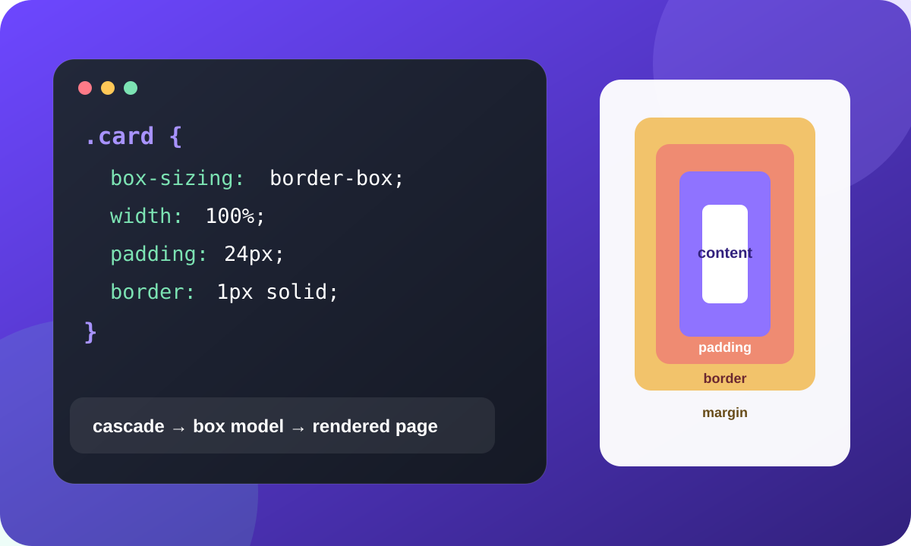

CSS не раскрашивает страницу случайным образом. Браузер сопоставляет селекторы с элементами, разрешает конфликты между правилами, вычисляет размеры прямоугольных областей и только после этого рисует результат.
1. Сначала работает каскад
Один и тот же элемент может подходить сразу под несколько правил. Браузер сравнит источник правила, важность, специфичность и порядок объявления. Поэтому перестановка двух правил иногда меняет страницу.
2. Затем считается размер блока
Размер элемента складывается из области содержимого, внутренних
отступов и границы. При значении border-box
заданная ширина уже включает padding и border.
.card {
box-sizing: border-box;
width: 100%;
padding: 24px;
border: 1px solid #d8d2c7;
}Хорошая CSS-диагностика начинается не со случайной замены свойств, а с вопроса: какое правило сейчас победило и какой размер вычислил браузер?
CSS Lab
Проверьте результат
- Страница имеет ограниченную ширину и находится по центру.
- Текст читается, а заголовки образуют понятную иерархию.
- Изображение не искажено и помещается в карточку.
- Ссылка заметна при наведении и при фокусе с клавиатуры.
- В CSS нет селекторов по вложенности и
!important.